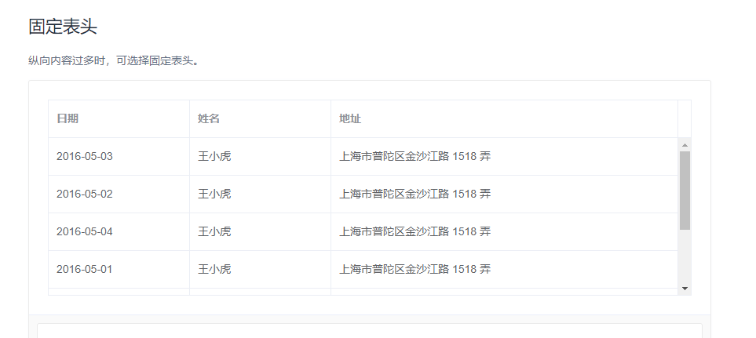

element-ui table组件自定义滚动条
经常使用element-ui的同学应该知道，element-ui虽然内部已经实现了el-scrollbar自定义滚动条（用法参考这里），但是并没有在官方文档中暴露出来，也没能在所有的组件中使用，例如el-table组件就没有。如下（截自官网2.11.1版本）：

这样的话，单从官方组件ui上就出现了风格不统一，遭到了产品妹子的万般嫌弃，强烈要求改改改。。。咳咳，不得不说ele官方也是很迷。思考了一下解决方案，无非就是：一、寻找替代品或自己写一个；二、魔改el-table组件。首先第一个直接排除，作为一个强迫症患者我不希望我的项目出现两种UI风格，同时作为一个懒人写一个风格功能都差不多的table组件消耗的时间成本太大了。然后唯有去针对官方组件进行修改，怎么改又是一个问题。如果使用template+slot的形式重新把需要滚动的内容加上自定义滚动条后再放回el-table无疑也是相当繁琐。想想自定义滚动条无非就是把需要滚动的内容区域右方和下方放置两个div来分别模拟y轴和x轴滚动条而已，那么出发点就有了，在el-table实际渲染后，找到需要实现滚动的区域元素，直接给这个元素添加模拟滚动条和模拟滚动的方法就可以了。首先观察一下el-table实际挂载后的结构：
很明显我们要找的就是最浅蓝色的那个元素。
接下来就是如何实现的问题，首先vue不提倡直接操作dom元素，也就是说直接在.vue中通过api获取挂载后的元素非常不官方也不cool。有什么方法能够让我们在元素实际渲染但仍未挂载是将其获取？答案就是使用自定义指令。这里直接放官方文档，自定义指令虽然实际上也是操作dom，但是它是dom未挂载前的操作，是官方提供的方法，无论性能、可读性等都较为优越。直接贴上代码：
import Vue from 'vue';
//自定义滚动条的库
import PerfectScrollbar from 'perfect-scrollbar';
//对应的css
import "perfect-scrollbar/css/perfect-scrollbar.css";
/**
* @description 为自定义滚动条全局注入自定义指令。自动判断该更新PerfectScrollbar还是创建它
* @param {Element} el - 必填。dom元素
*/
const elScrollBar = (el) => {
//在元素上加点私货，名字随便取，确保不会和已有属性重复即可，我取名叫做dmePs
if (el.dmePs instanceof PerfectScrollbar) {
el.dmePs.update();
} else {
//el上挂一份属性
el.dmePs = new PerfectScrollbar(el, { suppressScrollX: true });
}
};
Vue.directive("scrollbar",{
inserted(el, binding){
const { arg } = binding;
// 针对el-table组件的处理
if(arg === "el-tabel"){
el = el.querySelector(".el-table__body-wrapper");
if(!el){
return console.warn("未发现className为el-table__body-wrapper的dom");
}
}
const rules = ["fixed", "absolute", "relative"];
if (!rules.includes(window.getComputedStyle(el, null).position)) {
console.error(`perfect-scrollbar所在的容器的position属性必须是以下之一：${rules.join("、")}`)
}
elScrollBar(el);
},
componentUpdated(el, binding, vnode) {
const { arg } = binding;
if (arg === "任何你喜欢的标记") {
el = el.querySelector(".el-table__body-wrapper");
if(!el){
return console.warn("未发现className为el-table__body-wrapper的dom");
}
}
vnode.context.$nextTick(
() => {
try {
elScrollBar(el);
} catch (error) {
console.error(error);
}
}
)
},
})
然后就可以在容器中使用v-scrollbar指令控制自动逸滚动条了，如果是el-table组件则添加v-scrollbar:el-table。值得注意的是，容器的positon属性需要是[“fixed”, “absolute”, “relative”]之一，并且要有高度。